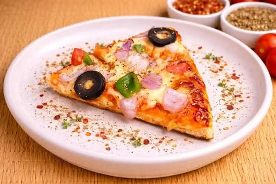

pizza

Home
- 1 ⅓ cups all-purpose flour
- 1 teaspoon baking powder
- ½ teaspoon salt
- ½ cup fat-free milk
- 2 tablespoons olive oil
- Gather all ingredients
- Mix flour, baking powder, and salt together in a bowl; stir in milk and olive oil until a soft dough forms.
- Turn dough onto a lightly floured surface and knead 10 times. Shape dough into a ball; cover with an inverted bowl and let sit for 10 minutes. Meanwhile, preheat the oven to 400 degrees F (200 degrees C).
- Roll dough into a 12-inch circle on a baking sheet.
- Bake the crust in the preheated oven for 8 minutes.
- Add your favorite toppings and bake until the crust is golden brown, about 10 to 15 minutes more. Enjoy!